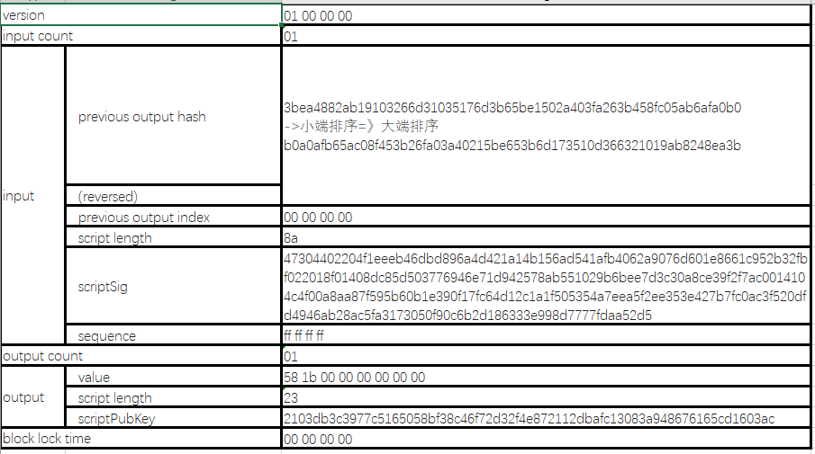
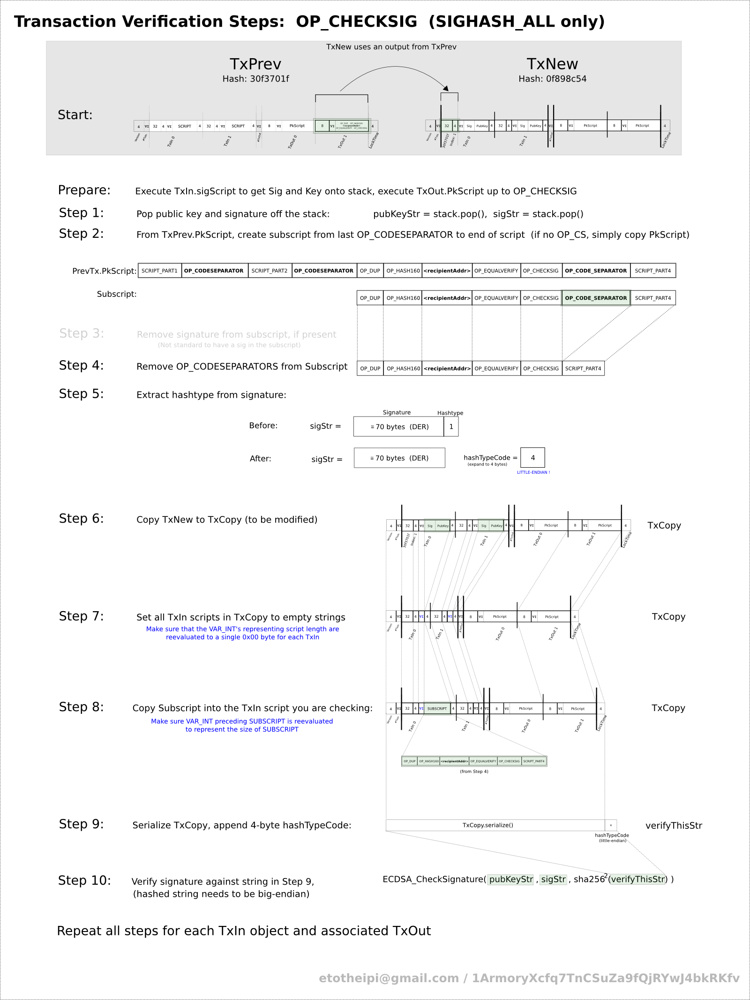

比特币的交易-5¶
我们还是拿3a295e4d385f4074f6a7bb28f6103b7235cf48f8177b7153b0609161458ac517做例子。
这篇文章需要结合比特币的交易-3这篇文章来理解，我们在这里也直接复用TransA、TransB的说法。
准备工作¶
私钥-公钥¶
在比特币的HD钱包-2中，我们已经算出来私钥的WIF表示:
1 |
5KUN8s42BCTkQVMTy3oFfqeXE8awVskbDi6XbDMpRnFvHJW9fgk |
以及公钥:
1 |
0489077434373547985693783396961781741114890330080946587550950125758215996319671114001858762817543140175961139571810325965930451644331549950109688554928624341 |
交易body¶
这笔交易有1个vin，1个vout；然后再把我们之前的结构分析图拿来，看看具体需要哪些参数传入:

需要手工构造input¶
- 指定上一笔vout的txid，是已知参数(outputTransactionHash):
b0a0afb65ac08f453b26fa03a40215be653b6d173510d366321019ab8248ea3b - 指定上一笔vout的index，是已知参数(sourceIndex):
00000000 - 构造scriptSig，即对这个UTXO签名。我们需要用私钥签名，这个是难点，我们后面来计算
需要手工构造output¶
- 设置矿工费用，从而计算输出值
- 构造scriptPubKey
最后组合成为一笔交易¶
- 增加version字段：
01000000 - 增加inputCount字段:
01 - 增加outputCount字段:
01 - 增加block lock time字段:
00000000
然后我们实现一个函数，将这些变量组合，最后得到原始交易值(对应bitcoin-cli的createrawTransaction)¶
1 2 3 4 5 6 7 8 9 10 11 12 13 14 15 16 17 18 19 |
# Makes a transaction from the inputs # outputs is a list of [redeemptionSatoshis, outputScript] def makeRawTransaction(outputTransactionHash, sourceIndex, scriptSig, outputs): def makeOutput(data): redeemptionSatoshis, outputScript = data return (struct.pack("<Q", redeemptionSatoshis).encode('hex') + '%02x'.format(len(outputScript.decode('hex'))) + outputScript) formattedOutputs = ''.join(map(makeOutput, outputs)) return ( "01000000" + # 4 bytes version "01" + # varint for number of inputs outputTransactionHash.decode('hex')[::-1].encode('hex') + # reverse outputTransactionHash struct.pack('<L', sourceIndex).encode('hex') + '%02x'.format(len(scriptSig.decode('hex'))) + scriptSig + "ffffffff" + # sequence "%02x".format(len(outputs)) + # number of outputs formattedOutputs + "00000000" # lockTime ) |
outputs构造¶
在构造一笔完整的交易之前，我们需要手工做两件事情：
- 构造一个output输出
- 对vin中的UTXO签名，构造scriptSig
outputs的构造比scriptSig简单一点，我们先来解决这个问题。
outputs是包含多个output的数组。在这个例子中，我们打算只构造一个output。结合我们之前的文章，就是构造一个bitcoin scriptPubKey，设置一把新锁。
这个scriptPubkey是这样子的:
1 |
<pubkey> OP_CHECKSIG |
PubKeyHash其实就是收币的地址，其它操作符都是现成的。
如何构造一笔output¶
一笔output的构造是简单的，所有东西都是现成的，而且这笔交易是个P2PK交易，输出非常简化，我们仅仅需要构造<pubkey> OP_CHECKSIG即可:
1 2 3 4 5 6 7 8 9 10 11 12 13 |
def makeOutput(value, index, pubkey): OP_CHECKSIG = 'ac' value = "{:0<16x}".format(int(struct.pack('<I', int(value)).hex(), 16)) index = "{:02x}".format(int(index)) pubkey = pubkey pubkey_length = "{:02x}".format(len(pubkey)/2) return value + index = pubkey_length + pubkey + OP_CHECKSIG > print(makeOutput(7000, 0, '2103db3c3977c5165058bf38c46f72d32f4e872112dbafc13083a948676165cd1603ac')) > 581b000000000000232103db3c3977c5165058bf38c46f72d32f4e872112dbafc13083a948676165cd1603ac > outputs = ['581b000000000000232103db3c3977c5165058bf38c46f72d32f4e872112dbafc13083a948676165cd1603ac'] |
如何对一笔交易签名(scriptSig)¶
在构造一笔交易的过程中，签署交易是一个非常麻烦的过程。其基本思想是使用ECDSA椭圆曲线算法和私钥生成交易的数字签名，但细节比较复杂。
我们可以先通过验证签名的过程来理解以下，验证签名过程的通过10个步骤描述。下面的缩略图说明了详细的流程。

这张图出自于这里，里面的TX ID是不同的，但基本步骤一样。
一些约定:¶
- TransA代表TxPrev，TransB代表TxNew
步骤:¶
- 首先解析TransB vin中的scriptSig，得到sigStr以及pubkeyStr
- 从TransA中拿出对应的vout ，从scriptPub脚本中截取需要的部分(subScript)：即
OP_DUP OP_HASH160 650d0497e014e60d4680fce6997d405de264f042 OP_EQUALVERIFY OP_CHECKSIG；截取规则就是检索最后一个OP_CODESEPARATOR的位置，在这之后的脚本段就是我们要截取的对象 - 如果subScript中包含了签名，移除掉(在scriptPub中包含签名是很特殊的情况，一般出现在P2SH交易中，普通交易不需要这一步)
- 如果脚本中有
OP_CODESEPARATORS操作符，移除 - 检测一步解析出来的scriptSig最后一个字节的HashType，扩展为4字节(小端排序)备用
- 将TransB 复制一份，变为TransBCopy
- 将TransBCopy中所有的Vin以及Vout 移除，同时将length字段置为0
- 将第4步中的subScript根据vin sequence填充到TransBCopy对应的位置
- 最后将交易TransBCopy序列化(采用DER编码)，并在末尾添加第5步中得到的HashType，得到签名的原始数据
- 最后执行签名验证过程: ECDSA_CheckSignature(pubkeyStr, sigStr, double_sha256(TransBCopy))
疑点解惑¶
为什么这么麻烦，不能直接对TransB签名吗？¶
因为最终的签名是包含在TransB当中的，签名是不能对自身来签名的；所以要签名的原始数据不能包含签名本身；
说句题外话，由于ECDSA的签名算法的局限，这个结构组织方式最终导致了一个顽疾，即交易延展性问题，也被翻译为交易可锻性（Transaction Malleability）。
简单来说，就是攻击者可以生成不同但是合法的scriptSig，这样虽然vin，vout金额和地址不变，但是TX ID会发生变化，从而导致用户找不到发送的交易。
这对于交易所是一个威胁，某个居心不良的用户可能充值了一笔资金，然后重新生成scriptSig又广播了一笔交易，然后欺骗交易所，说第一笔交易没收到，交易所检查以下果然如此，于是又发送了一笔资金给用户，这样用户就实现了double withdraw，白赚了一笔。MTGOX早期就是这么被坑的，后来也出现过一些损人不利己的脚本小子们公然利用这个漏洞攻击比特币网络；为了解决这个问题，core开发者提出了segwit解决方案(即隔离见证)，后来随着政治斗争、市场斗争的激化，一个技术问题最终演化成了扩容派的分裂。
总之还是那句话，关于segwit, 闪电网络，期待我们后面的文章吧。
为什么要用上一笔交易vout来填充这个位置呢？¶
我们说验证签名的过程，其实有三个作用:
- 签名证明私钥的所有者，即资金所有者，已经授权支出这些资金
- 授权证明是不可否认的（不可否认性）
- 签名证明交易（或交易的具体部分）在签字之后没有也不能被任何人修改
我们提供签名、私钥即承诺了第1点，对TransBCopy 签名承诺了第2点，但是要做到第3点，就需要对于引用UTXO的信息做承诺；
我们会问，单纯的prev TX ID和vout sequence no不能证明我要花费的哪一笔UTXO吗？
是的，这还是不够的，我们需要另外的信息熵的引入，就是这个UTXO的scriptPub。具体为什么，是ECDSA的数学特性决定的。请参考:
https://www.instructables.com/id/Understanding-how-ECDSA-protects-your-data/
老实说，关于ECDSA的签名验证，我在学习了很长时间以后，还是非常担心，因为签名生成算法使用随机密钥k作为临时私有-公钥对的基础，这个K值的随机性一定要人工保证，比特币的每笔交易验证，离不开签名验证，而这个签名验证如此复杂，确实让人心生忐忑。
这个OP_CODESEPARATORS是什么东东？¶
哈，到目前为止，我们接触到的都是比特币最简单、最基本、当然也是应用最广泛的交易类型，但是比特币还支持P2SH的高级交易，在这种交易中，vout里面可能会嵌入非常复杂的脚本，所以系统引入了OP_CODESEPARATORS作为复杂脚本的分隔符，以后的文章我们会详细讲解；
OP_CODESEPARATOR属于一种看起来过度设计的特性，老实说，我没有在比特币主网上发现像样的使用这个特性的交易，我也需要更多时间的学习才能搞明白这个东西，以下是一些参考资料：
https://github.com/bitcoin/bips/blob/master/bip-0017.mediawiki
https://bitcointalk.org/index.php?topic=164655.0
这个HashType是什么东东？¶
嗯哼，又是一个非常棘手但是有意思的问题。
我们说比特币有了script之后，功能是非常非常丰富的，不仅仅局限于支付场景，他可以应用到许多非常复杂的场景中。
比如现在让我们考虑一个外贸公司的业务，这个公司的对公账户每天都要接受许多客户的付款，处于安全考虑，我作为公司的CEO，希望能跟财务主管共同管理公司的对公账户，当需要支出时，一定要我跟财务主管都签字同意才可以。
这就衍生出了所谓的M-N交易类型，即多重签名交易。
在多重签名交易中，要花费一笔UTXO，可能需要多个签名，或者有这种语义：”一定要CEO的签名，如果没有CEO的签名，需要COO和CFO的联合签名”，为了表示这些，引入了SIGHASH这个字段，就是我们所说的HashType啦。
要考虑SIGHASH，实际上已经牵涉到了bitcoin的高级交易类型(P2SH)，还是那句话，关注后面的文章吧。
反向代码¶
嗯哼，把验证签名的步骤反向来一遍，就是签名的过程了。
代码表示如下:
1 2 3 4 5 6 7 8 9 10 11 12 13 |
def makeSignedTransaction(privateKey, outputTransactionHash, sourceIndex, scriptPubKey, outputs): myTxn_forSig = (makeRawTransaction(outputTransactionHash, sourceIndex, scriptPubKey, outputs) + "01000000") # hash code s256 = hashlib.sha256(hashlib.sha256(myTxn_forSig.decode('hex')).digest()).digest() sk = ecdsa.SigningKey.from_string(privateKey.decode('hex'), curve=ecdsa.SECP256k1) sig = sk.sign_digest(s256, sigencode=ecdsa.util.sigencode_der) + '\01' # 01 is hashtype pubKey = keyUtils.privateKeyToPublicKey(privateKey) scriptSig = utils.varstr(sig).encode('hex') + utils.varstr(pubKey.decode('hex')).encode('hex') signed_txn = makeRawTransaction(outputTransactionHash, sourceIndex, scriptSig, outputs) verifyTxnSignature(signed_txn) return signed_txn |
广播交易¶
好啦，构造了vin, vout，以及组合成一笔完整的交易，剩下的就是广播出去啦：
比特币的网络协议非常简单，设置好一个Magic Number就可以加入，以下时广播代码：
1 2 3 4 5 6 7 8 9 10 11 12 13 14 15 16 17 18 19 20 21 22 23 24 25 26 27 |
magic = 0xd9b4bef9 def makeMessage(magic, command, payload): checksum = hashlib.sha256(hashlib.sha256(payload).digest()).digest()[0:4] return struct.pack('L12sL4s', magic, command, len(payload), checksum) + payload def getVersionMsg(): version = 60002 services = 1 timestamp = int(time.time()) addr_me = utils.netaddr(socket.inet_aton("127.0.0.1"), 8333) addr_you = utils.netaddr(socket.inet_aton("127.0.0.1"), 8333) nonce = random.getrandbits(64) sub_version_num = utils.varstr('') start_height = 0 def getTxMsg(payload): return makeMessage(magic, 'tx', payload) sock = socket.socket(socket.AF_INET, socket.SOCK_STREAM) HOST_IP ="x.x.x.x" sock.connect(HOST_IP, 8333) sock.send(msgUtils.getVersionMsg()) sock.recv(1000) # receive version sock.recv(1000) # receive verack sock.send(msgUtils.getTxMsg("01000000013bea4882ab19103266d31035176d3b65be1502a403fa263b458fc05ab6afa0b0000000008a47304402204f1eeeb46dbd896a4d421a14b156ad541afb4062a9076d601e8661c952b32fbf022018f01408dc85d503776946e71d942578ab551029b6bee7d3c30a8ce39f2f7ac0014104c4f00a8aa87f595b60b1e390f17fc64d12c1a1f505354a7eea5f2ee353e427b7fc0ac3f520dfd4946ab28ac5fa3173050f90c6b2d186333e998d7777fdaa52d5ffffffff01581b000000000000232103db3c3977c5165058bf38c46f72d32f4e872112dbafc13083a948676165cd1603ac00000000".decode('hex'))) |
HOST IP 怎么获取呢？
如果你有一个全节点，可以直接调用RPC接口的getpeers函数。或者你直接执行:
1 |
nslookup bitseed.xf2.org |
从公共服务器里面检索nodes，里面随便挑一个IP 吧。
小结¶
以上就是一笔完整交易的构造过程。
这笔交易结构非常简单，只有一个vin，一个vout。
如果有多个vin, 多个vout的情况，就需要每个vin都签署一遍。
我们发现，一笔比特币交易的构造过程，最复杂的，就是签名以及验证的过程。它的步骤极其繁琐，而且椭圆曲线的签名算法极其复杂。如果在更高级的比特币交易中，比如P2SH，或者多重签名交易，或者Segwit交易，包含了更复杂的脚本和执行逻辑，事情很快就变得不可控制起来。
这是我在学习比特币知识时遇到的最大的恐惧，我认为如果将来比特币系统出现什么致命BUG，很大可能就在这里暴雷。
也许早期的开发者也觉得不放心，于是禁用了不少操作符。而目前Bitcoin SV和Bitcoin Cash的发展方向，是将这些操作符一一解放出来。
更强大的功能？还是更稳妥的基础设施？究竟怎样的做法是正确的，我也没有定论，只是告诉大家现在社区的发展方向就好了，大家自己做判断。
参考资料:¶
http://www.righto.com/2014/02/bitcoins-hard-way-using-raw-bitcoin.html